Code
library(tidyverse)
library(here)
library(climaemet)
library(patchwork)
library(ggplotify)
library(magick)
library(grid)
library(kableExtra)
library(ggmap)
library(ggspatial)
library(ggrepel)library(tidyverse)
library(here)
library(climaemet)
library(patchwork)
library(ggplotify)
library(magick)
library(grid)
library(kableExtra)
library(ggmap)
library(ggspatial)
library(ggrepel)Most of the tilt meters were set to the Typical configuration:
| Configuration | Temperature | Burst Interval | Burst Rate | Burst Duration |
|---|---|---|---|---|
| Typical | 1(min) | 1(min) | 8(Hz) | 20(sec) |
For those tilt meters that were not configured this way, data was condensed to one minute intervals. All data was trimmed down to one hour after deployment time and one hour before retrieval time.
Note that all data has been adjusted for the Magnetic Declination of -5.85 West within the Domino app.
All data speed units are in cm/s
Tide data was downloaded from the Geospatial Information Authority of Japan Japan Okinawa Tide Station
Created a function Tilt_Data_fun to add a tilt meter name column, separate the data and time into two columns, and add a m/s unit column.
#| warning: false
Tilt_Data_fun <- function(df, tilt_name){ #Function to add a tilt name column and separate data and time column
df %>%
separate(col = DateTime, #Choose the column that you want separated
into = c("Date", "Time"), # Separate it into two columns "Data" and "Time"
sep = " ", #What are the two separated by
remove = FALSE) %>% #Keep the orginial DateTime Column
mutate( #Set datetime,a dding in the UTC timezone so wer are removing taht
Date = lubridate::ymd(Date), #Set Date
Time = lubridate::hms(Time), #Set Time
Speed_m = Speed * 0.01, #Change cm/s -> m/s
VelocityN_m = Velocity_N * 0.01, #Change cm/s -> m/s
VelocityE_m = Velocity_E* 0.01, #Change cm/s -> m/s
#Double check that there are no negative headings, can do 360 + negative
TiltMeter = tilt_name) %>%
select(TiltMeter, everything()) #Moving TiltMeter# Column to be the first column
}
Tilt1DataClean <- Tilt_Data_fun(Tilt1Data, "Tilt1")
Tilt2DataClean <- Tilt_Data_fun(Tilt2Data, "Tilt2")
Tilt3DataClean <- Tilt_Data_fun(Tilt3Data, "Tilt3")
Tilt4DataClean <- Tilt_Data_fun(Tilt4Data, "Tilt4")
Tilt5DataClean <- Tilt_Data_fun(Tilt5Data, "Tilt5")
Tilt6DataClean <- Tilt_Data_fun(Tilt6Data, "Tilt6")
Tilt7DataClean <- Tilt_Data_fun(Tilt7Data, "Tilt7")
Tilt8DataClean <- Tilt_Data_fun(Tilt8Data, "Tilt8")We then join the data to combine all 8 Tilt Meter, Longitude and Latitude data, and add a Site column
JoinedData <- rbind(Tilt1DataClean, Tilt2DataClean, Tilt3DataClean, Tilt4DataClean, Tilt5DataClean, Tilt6DataClean, Tilt7DataClean, Tilt8DataClean)
JoinedData <- JoinedData %>%
mutate(Site = case_when(
str_detect(TiltMeter, "Tilt1") ~ "Oki02",
str_detect(TiltMeter, "Tilt2") ~ "Oki03",
str_detect(TiltMeter, "Tilt3") ~ "Oki04",
str_detect(TiltMeter, "Tilt4") ~ "Oki07",
str_detect(TiltMeter, "Tilt5") ~ "Oki09",
str_detect(TiltMeter, "Tilt6") ~ "Oki11",
str_detect(TiltMeter, "Tilt7") ~ "Oki15",
str_detect(TiltMeter, "Tilt8") ~ "Oki14" )) %>%
relocate(Site, .after = TiltMeter) %>%#Move new site column to after the Tilt Meter
left_join(LatLong, by = "Site")After we join the data we can view the upper (99.9%) and lower bounds (0.1%) to filter the data
For our time series plots we want to average the speed, heading, Velocity_N, and Velocity_E columns per hour. Filtering out the 99.9% upper bound which is anything above 25.01416 cm/s. We will make new hourly data frames. We will do the same for the JoinedData so that we are analyzing everything on an hourly
Created a function Tilt_Temp_fun to add a tilt meter name column, and separate the data and time into two columns.
Joining all the temperature data together, the lat long data, and creating a Site column. We don’t make an hourly temperature datframe because we can easily plot this as continuous data.
Making a new tide dataframe and calling it TideDataHourly the tide data is already hourly but we are combing the date and time into one column to match the other dataframes. We are also changing the sealevel from mm to meters in a new column Sealevel_m
Map of the sites, points represent the locations the Tilt Meters were placed.
MapBound <- c(127.65, 26.3, 128.2, 26.6) #Making a map bounding box, which centers the map better
#bounding box lowerleftlon, lowerleftlat, upperrightlon, upperrightlat
SiteMap1 <- get_map(location = MapBound, maptype = "hybrid")
SitesMap <- ggmap(SiteMap1) +
geom_point(data = LatLong,
aes(x = Long, y = Lat, color = Site),
size = 5) +
geom_label_repel(data = LatLong, aes(x = Long, y = Lat, label = Site),
size = 4) +
scale_color_manual(
values = c( "skyblue","orange" ,"green2", "blue","red", "darkred", "magenta", "purple")) +
#annotate('rect', xmin = 127.73, ymin = 26.45, xmax = 127.75, ymax = 26.46, color = "red", fill = "white")+
# annotate('text', x = 127.75 , y = 26.46, label = 'Oki 15', colour = "white", size = 4)+
# annotate('segment', x = 127.74835, xend = 127.75, y = 26.4377, yend = 26.46,
# color = 'white', arrow = arrow(length = unit (0.3,"cm")), size = 0.75) +
labs(x = 'Longitude', y = 'Latitude') +
ggtitle('Site Map') +
annotation_scale( bar_cols = c("lightblue", "white"),
location = "br")+ # put the bar on the bottom left and make the colors light blue and white
annotation_north_arrow(location = "tl") + # add a north arrow
coord_sf(crs = 4326) +
theme(legend.position = "none",
text = element_text(face = "bold", size =12))
SitesMap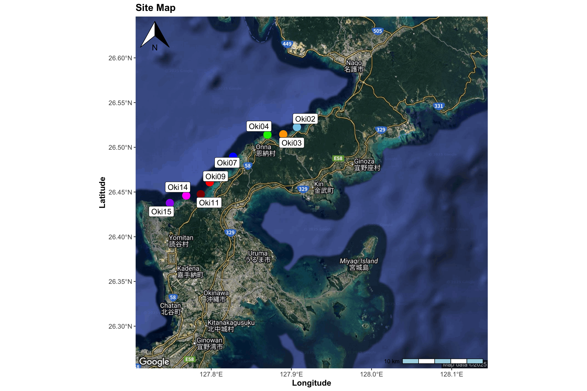
This code is converted from Matlab Katie Smith Via Christina Comfort.
prax_ellipse_fct <- function(u, v) {
N <- length(u)
#Remove the mean over time, to leave jut the "pertubations"
meanu <- mean(u)
meanv <- mean(v)
up <- u - meanu
vp <- v - meanv
#This has to do with the mean variance (covariance matrix elements)
# (1/N) * sum(vector * vector) is equivalent to N * var() but using N
# Instead of N-1 fo rthe divisor in the variance/covariance calculation
# R's var() and cov() use N-1, so we calculate it manually as in Matlab.
c11 <- (1/N) * sum(up * up)
c22 <- (1/N) * sum(vp *vp)
c12 <- (1/N) * sum(up * vp)
# This is the angle to rotate the vecotrs (in radians)
# R's atan2 is the same as Matlab's
phi <- 0.5 * atan2(2 *c12, c22 - c11) #+ pi/2
# phi_Deg <- (90 - phi * 180/pi) %% 360
# major_axis_angle <- phi_Deg
#Eignevalues of a matrix of those values calculated above
# R's eigen function returns a list with "values" (eigenvalues) and "vectors" (eigenvectors)
cov_matrix <- matrix(c(c11, c12, c12, c22), nrow=2, byrow = TRUE)
eig_result <- eigen(cov_matrix)
#Extract eigenvalues
# The **values** vector in the eig_result is already sorted in decreasing order by
lambda1 <- eig_result$values[1] #Major axis variance (largest eigenvalue)
lambda2 <- eig_result$values[2] # Minor axis variance (smallest eigenvalue)
#Here we turn the eigenvalues (which represetn the variance along the major and minor axes into varaiables which will make tidal ellipses)
a <- sqrt(lambda1) #Major axis semi-length
b <- sqrt(lambda2) # Minor axis semi-length
#Create the parameter 't"
t <- seq(0, 2 * pi, length.out = 100)
# Calculate the ellipse coordinates (rotated and not centered/mean -subtracted yet)
#Note: The orginal Matlab script has commented out adding 'meanu' to 'meanv', which would typically center teh ellipse on the mean velocity
# Matlab's 'phi(1)' is used because 'phi' is an array of size4 1. In R, 'phi' is a scalar
x_base <- a * cos(t)
y_base <- b * sin(t)
# x_rot <- a * cos(t) * cos(pi/2 - phi) - b * sin(t) * sin(pi/2 - phi)
#y_rot <- a * cos(t) * sin(pi/2 - phi) + b * sin(t) * cos(pi/2 - phi)
# Add the mean back to center the ellipse (if desired, based on the commented out Matlab line)
# For consistency with the original script's output variable names, we'll use x_rot and y_rot
# as 'x' and 'y', and include the mean adjustment as an option in the comments.
# If you want the ellipse centered at the mean velocity:
# x <- x_rot + meanu
# y <- y_rot + meanv
x_rot <- x_base * cos(phi) - y_base * sin(phi)
y_rot <- x_base * sin(phi) + y_base * cos(phi)
#The function will return the angle phi, and the coordinates x and y
return(list(phi = phi, x = x_rot, y = y_rot))
}We are again converting the matlab script and we are going to use the joined data to facet plot all the current ellipses together
TiltEllipses <- JoinedData %>%
group_by(TiltMeter, Site, Long) %>%
summarise(
ellipse = list({ results <- prax_ellipse_fct(Velocity_N, Velocity_E)
phi_deg <- (90 - (results$phi * 180 / pi)) #alls us to wrap angles into a 0-360 range
phi_deg <- ifelse(phi_deg > 90, phi_deg - 180, phi_deg)
tibble( x = results$x, y = results$y, phi_deg = phi_deg ) }),
.groups = "drop" ) %>%
unnest(ellipse)
TiltEllipses <- TiltEllipses %>%
group_by(TiltMeter) %>%
mutate(angle_label = round(unique(phi_deg), 1))
#Make a table so we can put all the tilt meter data together
# tibble(
# Site = JoinedData$TiltMeter,
# x = results$x,
# y = results$y
# )
#Creating a dataframe to plot the ellipse coodinates
# ellipse_data <- data.frame(x = xx, y = yy)
#Creating gg plot
AllEllipsesPlot <- ggplot(TiltEllipses, aes( x = x, y = y, color = Site, Lon)) +
geom_path() + #Have geom label, and have geom point next to it north
#facet_wrap(~ paste0(TiltMeter, "\n", angle_label, "˚ cw from north"), scales = "fixed") +
scale_color_manual(
values = c( "lightblue","orange" ,"green2", "blue","red", "darkred", "magenta", "purple")) +
labs(
x = 'u velocity (cm/s)',
y = 'v velocity (cm/s)'
) +
# Enforce equal scale (axis equal equivalent)
coord_fixed(ratio = 1) +
# Set the defined limits
xlim(-7, 7) +
ylim(-7, 7) +
labs(color = "Site") +
# Apply a clean theme
theme_bw() +
theme(
legend.position = "bottom",
text = element_text(face = "bold", size =12),
legend.title = element_text(size = 10),
plot.subtitle = element_text(hjust = 1))
# Display the plot
AllEllipsesPlot#ggsave(here("Output", "TiltMeterData", "CurrentVectors.png"),
# width = 10, height = 5) AllEllipsesPlot | SitesMap 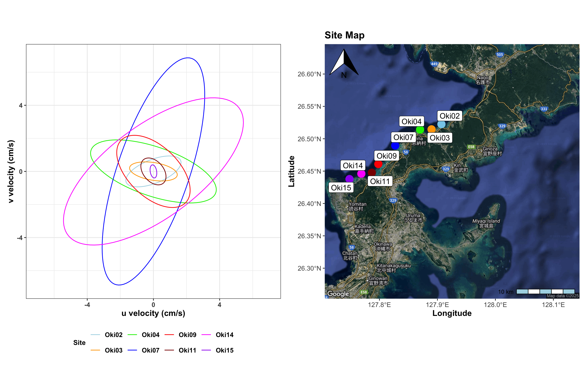
TiltEllipses <- JoinedData %>%
group_by(TiltMeter, Site, Long) %>%
summarise(
ellipse = list({ results <- prax_ellipse_fct(Velocity_N, Velocity_E)
phi_deg <- (90 - (results$phi * 180 / pi)) #alls us to wrap angles into a 0-360 range
#phi_deg <- ifelse(phi_deg > 90, phi_deg - 180, phi_deg)
tibble( x = results$x, y = results$y, phi_deg = phi_deg ) }),
.groups = "drop" ) %>%
unnest(ellipse)
TiltEllipses <- TiltEllipses %>%
group_by(TiltMeter) %>%
mutate(angle_label = round(unique(phi_deg), 1)) ggplot(TiltEllipses, aes( x = x, y = y, color = Site, Long)) +
geom_path() + #Have geom label, and have geom point next to it north
facet_wrap(~ paste0(Site, "\n", angle_label, "˚ cw from north"), scales = "fixed") +
scale_color_manual(
values = c( "lightblue","orange" ,"green2", "blue","red", "darkred", "magenta", "purple")) +
labs(
x = 'u velocity (cm/s)',
y = 'v velocity (cm/s)'
) +
# Enforce equal scale (axis equal equivalent)
coord_fixed(ratio = 1) +
# Set the defined limits
xlim(-7, 7) +
ylim(-7, 7) +
labs(color = "Site") +
# Apply a clean theme
theme_bw() +
theme(
text = element_text(face = "bold", size =12),
legend.position = "none",
plot.subtitle = element_text(hjust = 1))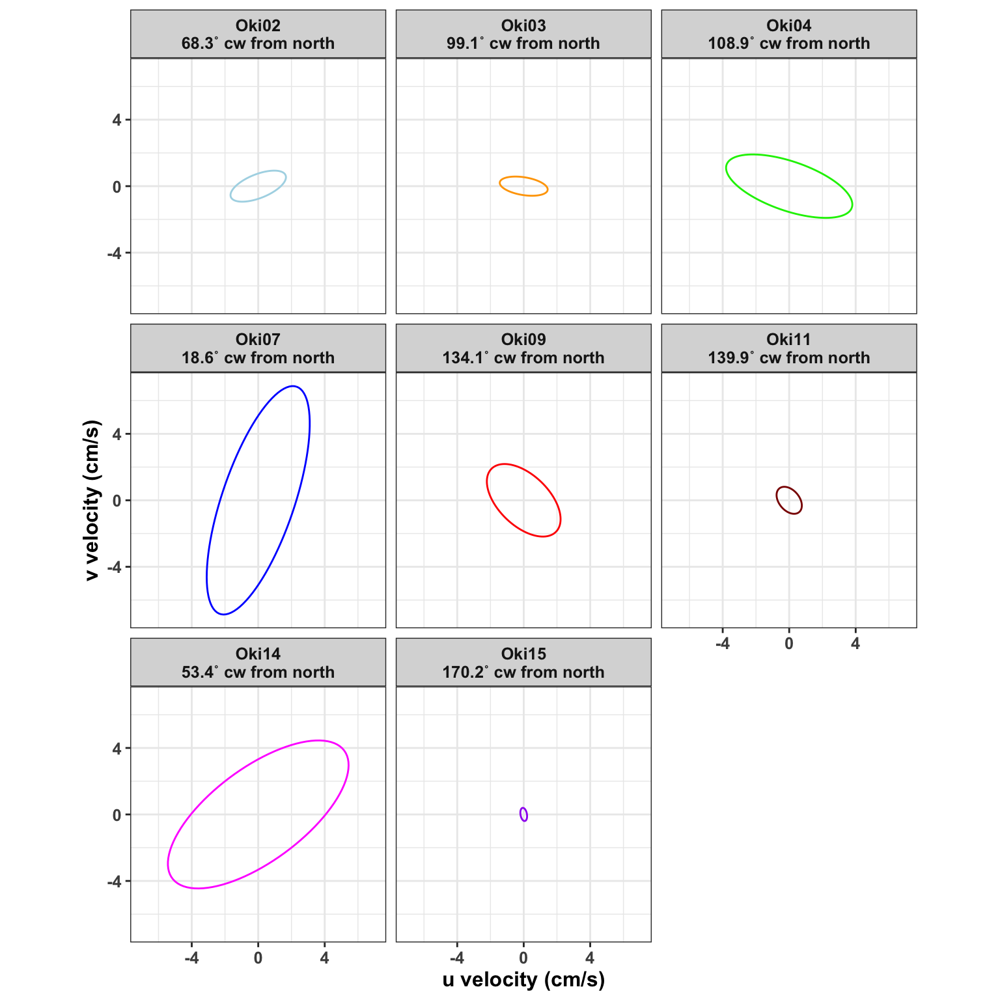
# Display the plot
ggsave(here("Output", "TiltMeterData", "CurrentVectors.png"),
width = 6, height = 6)The data can be viewed on an interactive map on GoogleEarth
Feather Plot: Time series showing the average velocity in cm/s. A positive Velocity North (blue) indicates a north flow direction, a negative Velocity North (blue) is a south flow direction. A positive Velocity East (red) is a east flow direction, a negative Velocity East (red) is a west flow direction.
Windrose Plot: Represents the current speed and direction. The longer the pie cut is in a specific direction is the more dominant current direction. The colors represtent the current speeds in cm/s. The majority current speed at all sites was between 0-5 cm/s.
Temperature Plot: A line graph showing all temperature. All sites had an increase in temperature around August 5th and a decrease in temperature around August 12th. This may be due to nearby typhoons:
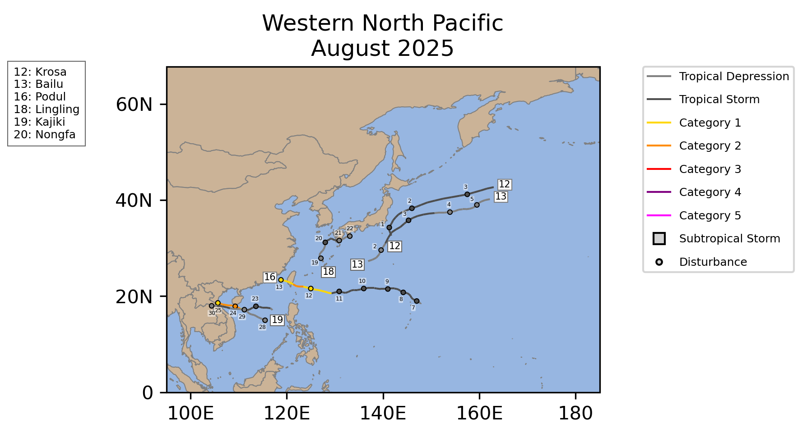
Tracks of Cyclones near Okinawa in August 2025, the small numbers along the tracks represent the dates when the cyclone was present.Source: NOAA National Centers for Environmental Information, Monthly Tropical Cyclones Report for August 2025, published online September 2025, retrieved on November 17, 2025 from here. DOI
Velocity_TidePlot_fun <- function(Tiltdf, FeatherPlotname, Tempdf, TempPlotname, Tiltdf2, Sitename1, AverageSpeed, WindrosePlotname, TiltPhoto, combinedplot, Sitename) {
time_limits <- range(Tiltdf$DateTime, na.rm = TRUE)
FeatherPlot <- ggplot(Tiltdf, aes( DatetTime, y = 0)) +
geom_segment(aes( x = DateTime, y = 0,
xend = DateTime,
yend = Velocity_N, #Makes the arrows point up/down
color = "Velocity North"),
lineend = "round" ,
linewidth = 1,
alpha = 0.5) +
geom_segment(aes( x = DateTime, y = 0,
xend = DateTime, #Makes the arrows lean left/right
yend = Velocity_E, #Makes the arrows point up/down
color = "Velocity East"),
#arrow = arrow(length = unit(0.2, "cm")),
linewidth = 1,
alpha = 0.25) +
geom_point(aes(x = DateTime, y = Velocity_N), color = "blue4", size = 0.5) +
geom_point(aes(x = DateTime, y = Velocity_E), color = "coral2", size = 0.5) +
scale_color_manual(name = "Velocity Direction",
values = c("Velocity North" = "blue4", "Velocity East" = "coral2")) +
scale_x_datetime(limits = time_limits,
date_breaks = "2 day",
minor_breaks = "1 day",
date_labels = ("%b %d")) +
labs( x = "Date",
y = "Velocity (cm/s)") +
theme_minimal() +
theme( legend.position = "inside", #axis.text.x = element_text(angle = 45, hjust =1) +
legend.position.inside = c(0.5, 0.0),
legend.box.background = element_rect(color = "black"),
#legend.key.size = unit(0.1, "cm"),
axis.text.x = element_text(angle = 45, hjust =1))
ggsave(here("Output","TiltMeterData", "Feather Plots", FeatherPlotname))
TempPlot <- ggplot(Tempdf, aes(DateTime, Temperature)) +
geom_line(color = "pink3") +
scale_x_datetime(limits = time_limits,
date_breaks = "2 day",
minor_breaks = "1 day",
date_labels = ("%b %d")) +
labs(y = "Temperature (°C)") +
theme_minimal() +
theme( axis.title.x = element_blank(),
axis.text.x = element_blank())
ggsave(here("Output", "TiltMeterData", "Temperature", TempPlotname))
TidePlot <- ggplot(TideDataHourly, aes(DateTime, Sealevel_m)) +
geom_line(color = "steelblue") +
scale_x_datetime(limits = time_limits,
date_breaks = "2 day",
minor_breaks = "1 day",
date_labels = ("%b %d")) +
labs( y = "Sealevel (m) ",
x = " Date") +
theme_minimal() +
theme( axis.text.x = element_text(angle = 45, hjust =1))
WindrosePlot <- ggwindrose(
speed = Tiltdf2$Speed,
direction = Tiltdf2$Heading,
n_directions = 8,
speed_cuts = seq(0, 25, 5), Inf) +
#stack_revers = TRUE) + #If we want the higher speeds on the outside of the plot
scale_fill_manual(
values = c( "skyblue","orange" ,"green2", "blue","red", "darkred"),
drop = FALSE
) +
theme_minimal() +
labs(subtitle = AverageSpeed, fill = "Current Speed\n (cm/s)",
title = Sitename1) +
theme(
axis.title = element_blank(),
text = element_text(face = "bold"),
legend.title = element_text(size = 9),
plot.subtitle = element_text(hjust = 1))
ggsave(here("Output","TiltMeterData", "Windrose", WindrosePlotname))
TiltPhotoPlot <- wrap_elements(
panel = rasterGrob(as.raster(TiltPhoto),
width = unit(1, "npc"),
height = unit(0.5, "npc"))
)
FeatherPlot2 <- FeatherPlot +
guides(shape = guide_legend(override.aes = list(size = 0.5)),
color = guide_legend(override.aes = list(size = 0.5))) +
theme(legend.title = element_text(size = 4),
legend.text = element_text(size = 4),
legend.key.size = unit(1, "mm"), # size of boxes
legend.key.height = unit(2, "mm"), # height of each key row
legend.key.width = unit(1.5, "mm"), # width of each key column
legend.spacing.y = unit(0.1, "mm"), # vertical spacing between keys
legend.spacing.x = unit(0.1, "mm"), # horizontal spacing
legend.box.background = element_rect(color = "black", size = 0.3),
axis.title.x = element_blank(),
axis.text.x = element_blank(),
axis.ticks.x = element_blank())
#legend.position = "none")
WindrosePlot2 <- WindrosePlot + theme(plot.title = element_blank())
left_side <- (FeatherPlot2 / TempPlot / TidePlot) +
plot_layout(axes = "collect")
right_side <- (WindrosePlot2 / plot_spacer() / TiltPhotoPlot)
combined <- (left_side | right_side) +
plot_layout(widths = c(2,1)) + # control relative widths
plot_annotation(
title = Sitename,
theme = theme(plot.title = element_text(hjust = 0.5, size = 16))
) &
theme(text = element_text(face = "bold"))
ggsave(here::here("Output", "TiltMeterData", combinedplot))
return(combined)
}
Velocity_TidePlot_fun(Tilt1DataHourly, FeatherPlotname = "Tilt1Velocity.png", Tilt1Temp, TempPlotname = "Tilt1Temp.png", Tilt1DataHourly, Sitename1 = "Site: Oki 2", AverageSpeed = "Average Speed: 1.74 cm/s", WindrosePlotname = "Windrose1.jpeg", Tilt1Photo, combinedplot = "Tilt1TideCombo.jpeg", Sitename = "Site: Oki 2")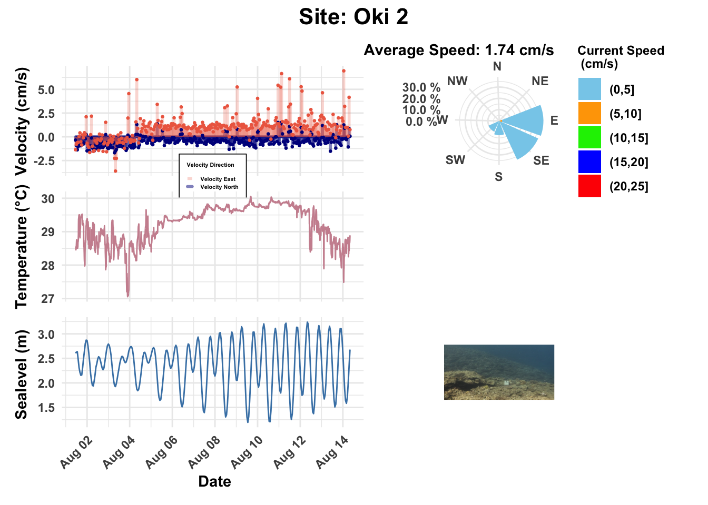
Velocity_TidePlot_fun(Tilt2DataHourly, FeatherPlotname = "Tilt2Velocity.png", Tilt2Temp, TempPlotname = "Tilt2Temp.png", Tilt2DataHourly, Sitename1 = "*Site: Oki 3*", AverageSpeed = "Average Speed: 0.80 cm/s", WindrosePlotname = "Windrose2.jpeg", Tilt2Photo, combinedplot = "Tilt2TideCombo.jpeg", Sitename = "*Site: Oki 3*")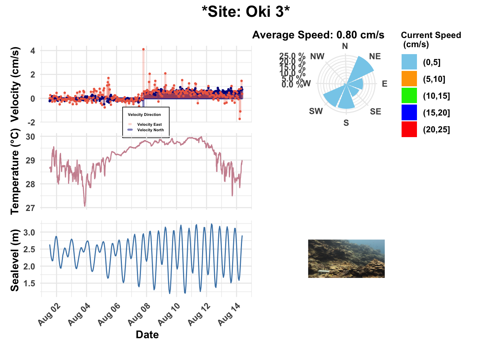
Velocity_TidePlot_fun(Tilt3DataHourly, FeatherPlotname = "Tilt3Velocity.png", Tilt3Temp, TempPlotname = "Tilt3Temp.png", Tilt3DataHourly, Sitename1 = "Site: Oki 4", AverageSpeed = "Average Speed: 3.53 cm/s", WindrosePlotname = "Windrose3.jpeg", Tilt3Photo, combinedplot = "Tilt3TideCombo.jpeg", Sitename = "Site: Oki 4")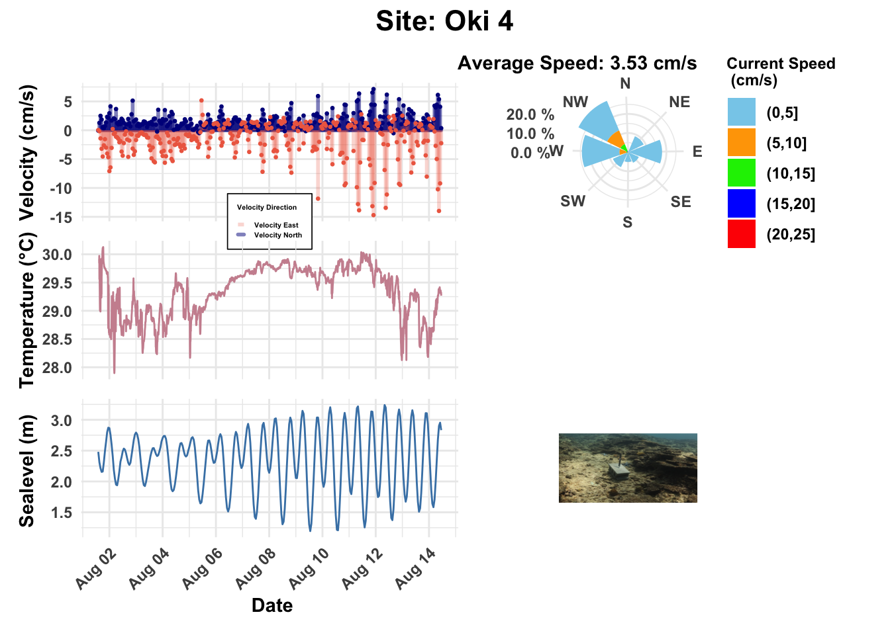
Velocity_TidePlot_fun(Tilt4DataHourly, FeatherPlotname = "Tilt4Velocity.png", Tilt4Temp, TempPlotname = "Tilt4Temp.png", Tilt4DataHourly, Sitename1 = "*Site: Oki 7*", AverageSpeed = "Average Speed: 6.27 cm/s", WindrosePlotname = "Windrose4.jpeg", Tilt4Photo, combinedplot = "Tilt4TideCombo.jpeg", Sitename = "*Site: Oki 7*")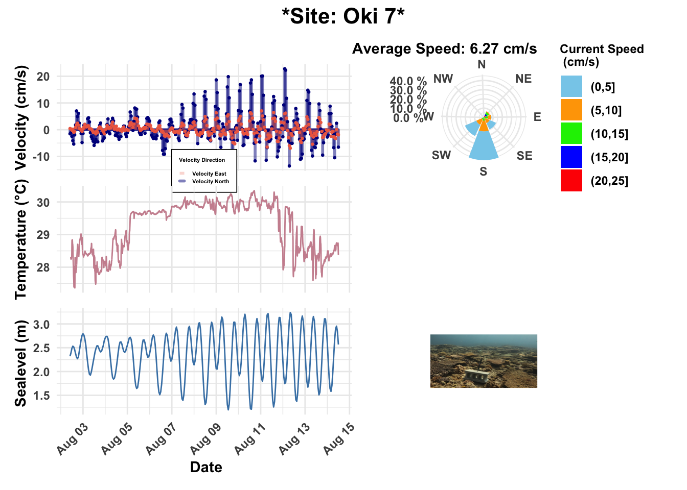
Velocity_TidePlot_fun(Tilt5DataHourly, FeatherPlotname = "Tilt5Velocity.png", Tilt5Temp, TempPlotname = "Tilt5Temp.png", Tilt5DataHourly, Sitename1 = "Site: Oki 9", AverageSpeed = "Average Speed: 2.28 cm/s", WindrosePlotname = "Windrose5.jpeg", Tilt5Photo, combinedplot = "Tilt5TideCombo.jpeg", Sitename = "Site: Oki 9")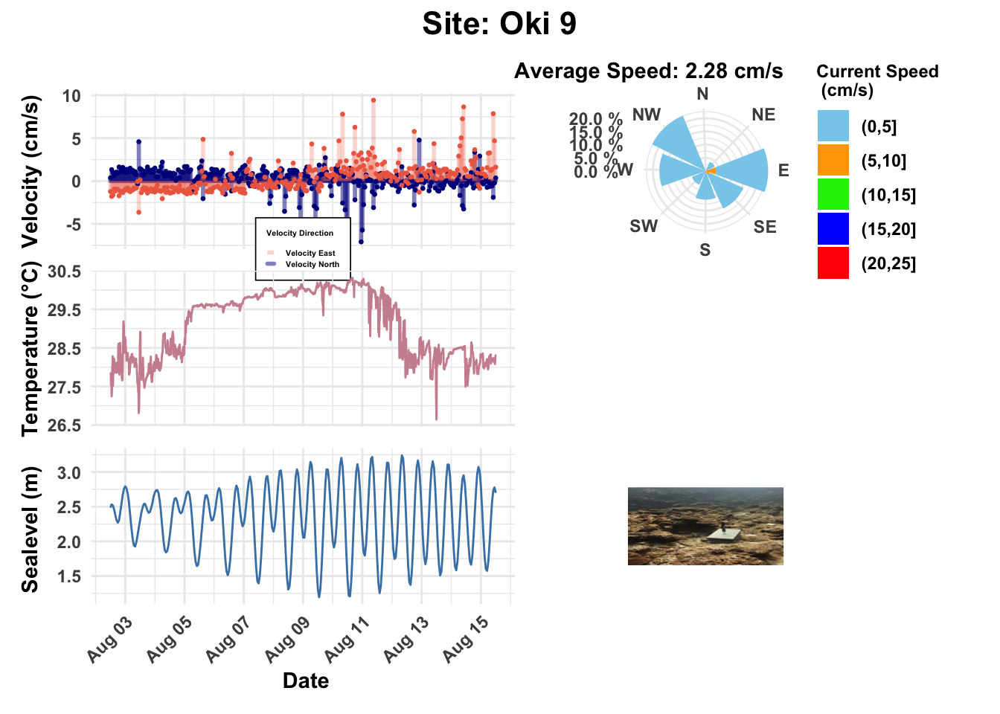
Velocity_TidePlot_fun(Tilt6DataHourly, FeatherPlotname = "Tilt6Velocity.png", Tilt6Temp, TempPlotname = "Tilt6Temp.png", Tilt6DataHourly, Sitename1 = "*Site: Oki 11*", AverageSpeed = "Average Speed: 0.80 cm/s", WindrosePlotname = "Windrose6.jpeg", Tilt6Photo, combinedplot = "Tilt6TideCombo.jpeg", Sitename = "*Site: Oki 11*")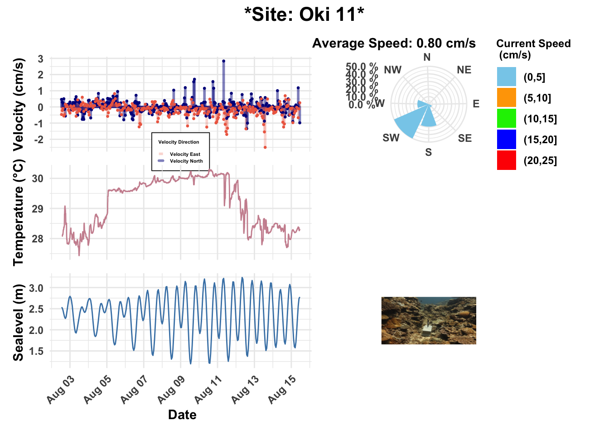
Velocity_TidePlot_fun(Tilt7DataHourly, FeatherPlotname = "Tilt7Velocity.png", Tilt7Temp, TempPlotname = "Tilt7Temp.png", Tilt7DataHourly, Sitename1 = "Site: Oki 15", AverageSpeed = "Average Speed: 1.45 cm/s", WindrosePlotname = "Windrose7.jpeg", Tilt7Photo, combinedplot = "Tilt7TideCombo.jpeg", Sitename = "Site: Oki 15")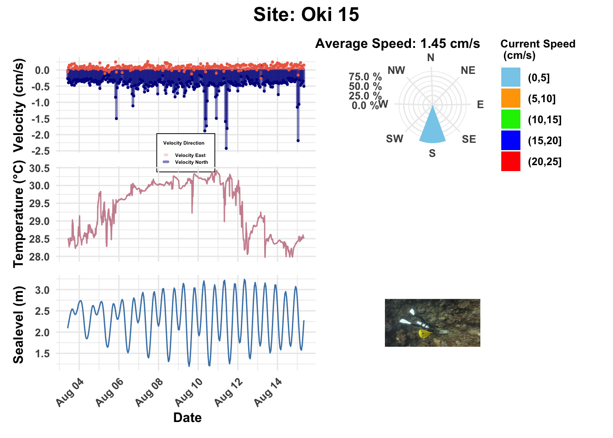
Velocity_TidePlot_fun(Tilt8DataHourly, FeatherPlotname = "Tilt8Velocity.png", Tilt8Temp, TempPlotname = "Tilt8Temp.png", Tilt8DataHourly, Sitename1 = "Site: Oki 14", AverageSpeed = "Average Speed: 5.43 cm/s", WindrosePlotname = "Windrose8.jpeg", Tilt8Photo, combinedplot = "Tilt8TideCombo.jpeg", Sitename = "Site: Oki 14")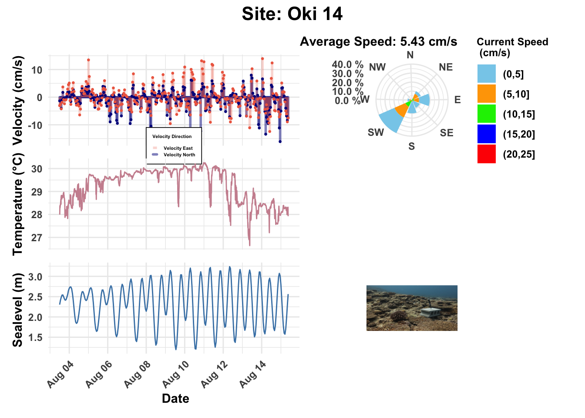
Degrees to compass heading function
degrees_to_compass <- function(degrees) {
# Normalize degrees to be within 0-360
degrees <- degrees %% 360
# Define compass directions and their corresponding degree ranges
directions <- c("N", "NE", "E", "SE", "S", "SW", "W", "NW", "N")
breaks <- c(0, 22.5, 67.5, 112.5, 157.5, 202.5, 247.5, 292.5, 337.5, 360)
# Find the correct direction based on the degree value
# The findInterval function returns the index of the interval containing each element of 'degrees'.
# We subtract 1 from the index because the 'directions' vector has N at index 1 and 9, but we only need one N.
# The last break (360) is effectively the same as 0 for N.
compass_heading <- directions[findInterval(degrees, breaks)]
return(compass_heading)
}# Define compass directions and their corresponding degree ranges
directions <- c("N", "NE", "E", "SE", "S", "SW", "W", "NW", "N")
breaks <- c(0, 22.5, 67.5, 112.5, 157.5, 202.5, 247.5, 292.5, 337.5, 360)Means<- JoinedData %>%
group_by(Site) %>%
filter(Speed <= 25.01416) %>%
summarise(MinSpeed = min(Speed, na.rm = TRUE),
MaxSpeed = max(Speed, na.rm = TRUE),
MeanSpeed = mean(Speed, na.rm = TRUE),
MeanFlowDir = mean(Heading, na.rm = TRUE) ) %>%
mutate(AverageDirection = degrees_to_compass(MeanFlowDir)) %>%
mutate_if(is.numeric, round, 2) %>%
mutate(MeanFlowDir = paste0(MeanFlowDir, "˚")) %>%
arrange(Site) #Reorder so that the means are from lowest ot highest speed
kbl(Means, format = "html", col.names = c("Site", "Min Speed (cm/s)", "Max Speed (cm/s)", "Mean Speed (cm/s)", "Mean Flow Direction ˚", "Mean Direction ")) %>% #Giving the average speed m/s of each tilt meter
kable_classic() %>%
kable_styling(full_width = F, position = "center") %>%
row_spec(c(2, 4, 6), bold = TRUE, color = "black", background = "lightyellow") #Highlight oki3, 7, 11| Site | Min Speed (cm/s) | Max Speed (cm/s) | Mean Speed (cm/s) | Mean Flow Direction ˚ | Mean Direction |
|---|---|---|---|---|---|
| Oki02 | 0.01 | 14.46 | 1.74 | 132.02˚ | SE |
| Oki03 | 0.01 | 24.61 | 0.79 | 139.18˚ | SE |
| Oki04 | 0.08 | 24.21 | 3.53 | 212.1˚ | SW |
| Oki07 | 0.65 | 25.01 | 6.28 | 169.02˚ | S |
| Oki09 | 0.01 | 18.67 | 2.28 | 196.68˚ | S |
| Oki11 | 0.00 | 14.94 | 0.80 | 215.22˚ | SW |
| Oki14 | 0.20 | 24.89 | 5.44 | 165.52˚ | S |
| Oki15 | 0.44 | 6.13 | 1.45 | 190.49˚ | S |
Table of the minimum, maximum and average current speeds collected by each of the tilt meters by site. All sites had a souther current direction on average. Highlighted rows are the sites we are considering for long-term monitoring.
TempMeans <- JoinedTempData %>%
group_by(Site) %>%
summarise(min(Temperature), max(Temperature), mean(Temperature)) %>%
mutate_if(is.numeric, round, 2)
kbl(TempMeans, col.names = c("Site", "Min Temperature", "Max Temperature", "Mean Temperature")) %>%
kable_classic() %>%
kable_styling(full_width = FALSE) %>%
row_spec(c(2, 4, 6), bold = TRUE, color = "black", background = "lightyellow")| Site | Min Temperature | Max Temperature | Mean Temperature |
|---|---|---|---|
| Oki02 | 27.05 | 30.05 | 29.23 |
| Oki03 | 27.06 | 29.99 | 29.16 |
| Oki04 | 27.90 | 30.13 | 29.35 |
| Oki07 | 27.36 | 30.35 | 29.25 |
| Oki09 | 26.64 | 30.32 | 29.11 |
| Oki11 | 27.43 | 30.30 | 29.17 |
| Oki14 | 26.64 | 30.26 | 29.26 |
| Oki15 | 27.97 | 30.42 | 29.36 |
Table of the minimum, maximum, and average temperatures collected by each of the tilt meters by site. All sites had an average temperature of 29˚C and experienced a 3˚C temperature fluctuation within the two weeks during deployment. Highlighted rows are the sites we are considering for long-term monitoring.